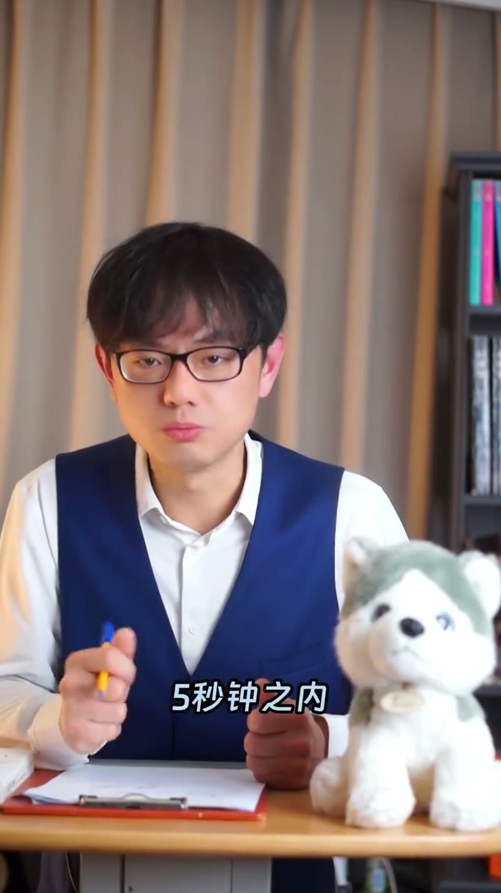

内容要点
一支 2 分钟的培训方法课：指出销售技巧培训请内部高手或外部专家，如果没有设计，效果都不会很好。点破外部专家「同行可参考、非同行随便听听」的现实后，给出杨老师原创的「攻守部队」游戏化培训法——请三个互相不买账的高手各带一组，把销售痛点挂白板，进攻组挑漏洞、防守组限时想对策，把培训变成一场刺激的攻守大战。
知识结构
请外部专家要分辨：如果以前是这个行业的可以参考相信，不是的话随便听听——人家也是混口饭吃。
真有干货的高手也不轻易倒出来——皮薄肉多十八个褶的饺子，肯定倒不出来，不要为难人家。
书里原理「充分发挥学员自主性」，翻译成人话就是「挑逗群众斗群众」；培训前请三个互相不买账的高手。
ABC三组各发销售痛点问题，高手带组把方案挂白板；进攻组挑漏洞揍对方一拳，防守组5秒内想对策，判点数打鸡血。
销售培训 = 游戏化对抗。请三个互相不买账的高手带组，让学员互相挑漏洞、限时想对策，把「挑逗群众斗群众」变成真实演练。
00:00-00:42外部专家：混口饭吃 vs 茶壶倒饺子
开场问：你们公司的销售技巧培训是请内部高手讲，还是请外部专家讲？「不管是内部高手还是请外部专家来讲，如果没有设计过，效果都不会很好。」
讲者调侃经济下行期还请外部专家的公司「正是家有实力的好公司」，然后点破：如果这位外部专家以前是你们这个行业的，可以参考相信一下；如果不是你们这个行业的，那就随便听听吧——人家也是混口饭吃，不要为难人家。
第二种叫「茶壶里倒饺子」：真有干货的高手像皮薄肉多十八个褶的饺子，确实有料，但肯定倒不出来——就像要你把四丈的屠龙宝刀、屠龙秘器都拿出来，你也不愿意。
00:42-01:05原理：充分发挥学员自主性
从一本书里学来的原理：「原文是充分发挥学员的自主性，翻译成人话就是挑逗群众斗群众。」
然后介绍杨老师原创的方法「攻守部队」。怎么做的？听好了——培训前把高手请过来。这里有一个经验：不要请一个，要请三个，而且要请三个互相不买账的高手。买账的就不要请。为什么要请三个互相不买账的高手呢？待会你就明白了。
你告诉三位高手来上销售技巧培训课，不用任何准备，人家一听很高兴就来了。
01:05-01:49攻守部队玩法：挑漏洞揍一拳
上课时把所有人分成 ABC 三组，每一组发一个销售痛点问题——找不到客户、客户不理我、客户总是放我鸽子什么的。然后让三位高手每人带领大家解决，写好挂到白板纸上。
写完之后就开始挑唆：「我们现在来玩个游戏叫攻守部队。ABC，你们两组组成进攻小组，C 组是防守。你们去挑 C 组写在白板纸上的漏洞，每挑出一个漏洞就相当于揍了对方一拳，目标是把对方打趴下。C 组在对方指出漏洞之后要赶快想对策，五秒钟之内没想出来就判对方一个点数。」
讲者现场演示：「C 组的问题是对方采购不见我怎么办，你们写的答案是冲过去找他们的采购经理。你看这就是个漏洞——人家采购不见你，你怎么就敢保证你能见到采购经理？」
等到 C 组被揍得差不多了就喊停，换 A 组当进攻小组去揍 B 组。这时候一定要喊一句打鸡血的话：「C 组，来，各位，有怨报怨有仇报仇！」

完整转录（109段）
以下文本由 Whisper medium 模型自动转录，可能存在少量识别误差，已尽可能修正。
你们公司的销售技巧培训是怎么搞的
是请内部高手来讲的呢
还是请外部专家来讲的
不管是内部高手还是请外部专家来讲
如果没有设计过效果都不会很好
请外部专家来讲的话
啊什么
请外部专家来讲
现在经济性是波宾廊各家公司都砍一算
你们还在请外部专家来
说明你们正是家有实力的好公司
给你们公司点赞
你要注意啊
如果这位外部专家以前是你们这个行业
那你可以参考相信一下
如果不是你们这个行业的
那你就随便听听吧
人家也是混口饭吃不要为难人家
人家要藏着椰子
你也不要为难人家
毕竟要让你把四长的屠龙宝刀
屠龙秘器都拿出来
你也不愿意的对吧
第二种叫茶壶梨倒饺子
饺子卖的是真的有的
而且是皮薄肉多十八个褶
比小良身价还好吃
但是那倒是肯定倒不出来的
你也不要为难人家怎么办
我从这本书里学来的原理
原文是充分发挥学员的自主性
翻译成人话就是挑逗群众逗群众
然后杨老师原创发明的一个方法叫做
攻守部队非常有用
怎么做呢
听好了
培训前把高手请过来
这里有一个经验
不要请一个
你要请三个
而且要请三个互相不买账的高手
买账的你就不要请
为什么要请三个互相不买账的高手呢
待会你就明白了
你告诉三位高手
来上销售技巧培训课
不用任何准备
人家一听很高兴就来了
上课时你把所有人分成ABC三组
每一组给他发一个销售痛点问题
什么找不到客户
客户不理我
客户总是放我鸽子什么的
然后你让三位高手
每一个人带领大家解决办法
写好把它挂在白板纸上
写完之后你就开始挑断
告诉大家
我们现在来玩个游戏叫攻守部队
现在ABC你们两组组成叫进攻小组
C是防守小组
ABC你们怎么进攻呢
你们去挑C组写在白板纸上的漏洞
每挑出一个漏洞就相当于揍了对方一拳
你们的目标是把对方打趴下
C组人家在指出你们漏洞之后
要赶快想对策
五秒钟之内如果没有想出对策
我是全体在盘
就判对方一个点数
我来给你演示一下
C组的问题是对方采购不见我怎么办
你们写的答案是冲过去找他们采购经理
ABC你们看好了怎么出拳
你想见人家采购经理人家就进来
人家采购不见你怎么办
你看这就是个漏洞
这是C组会说杨老师你也太影响了
你怎么不找数
大哥我要是找数了这个游戏就不好玩了
等到你看到C组被揍得差不多了
你就喊停
也可以说C组你们现在A组组成进攻小组
我们去揍B组
然后这时候你一定要一定要一定要数一句打鸡血的话
反正不说白不说
C组来各位有怨报怨有仇报仇
然后这时候就会看到刀剑五元血风刑
与什么倚天剑屠龙刀金箍棒九死定爬
反正家里私藏的好东西都拿出来了
这时候拿个录音笔把他们悄悄的全部录下来
然后就在变成山风点火
杨老师特别擅长干这个
简直就是带人流古风气吹钢铁高楼的那种
我前面跟你说了要请三个户部买上的高手
你现在知道为什么了吧
你看我现在描述的会声会声对吧
因为我是真的干过
而且当时声浪简直就要把会议室给掀翻了
照片我是不方便给你看的
人家没有给我小小小授权
我是不能秀的
但请你相信我真的干过这件事情
自己乐趣无穷
公司也受益多多
你也可以的马上就能学会的
可以试试看
如果遇到问题
大家请在评论区里call我